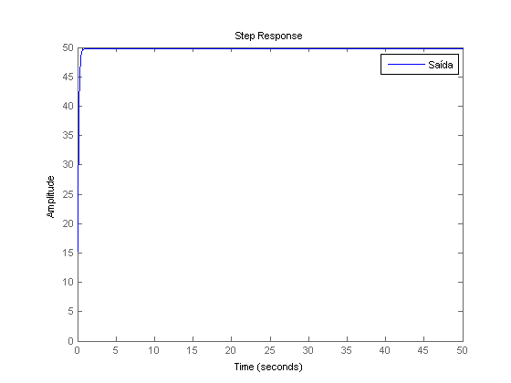
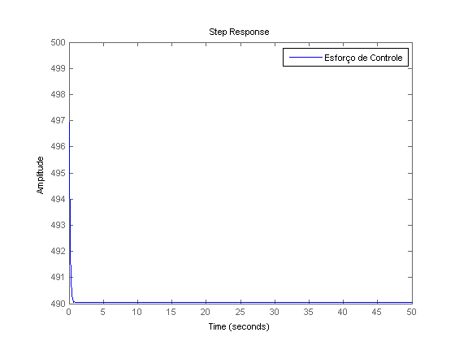
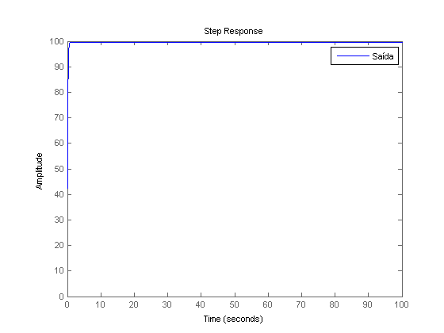
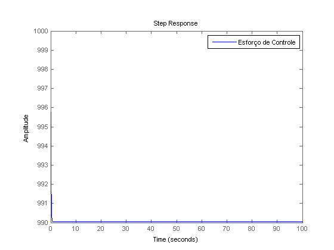
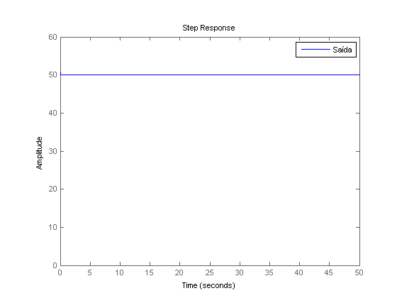
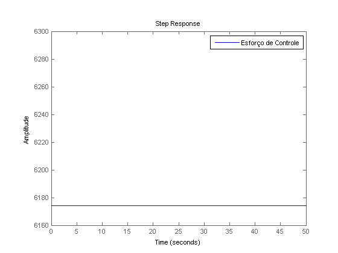
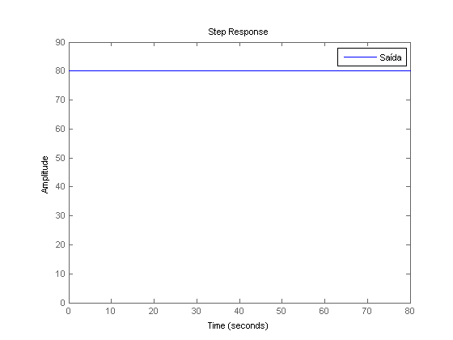
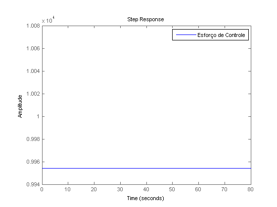
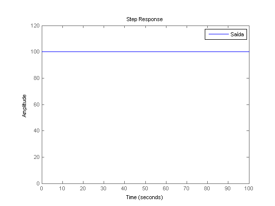
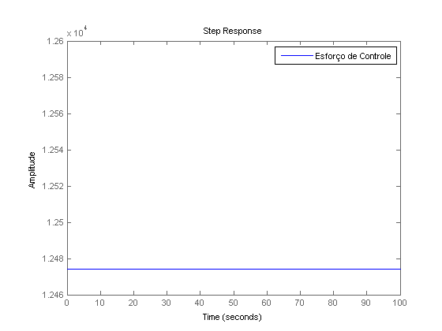

Contents
ES868 – Pré-Relatório Lab 8
Identificação de um motor de corrente contínua
Turma A - 23/05/2015
- Augusto Miranda Garcia - 104627
- Guilherme de Oliveira Souza – 117093
- Vinícius Ragazi David - 120258 clear all; close all; clc;
load ../lab7/planta.mat
Controlador proporcional
% Compensador para o damping sugerido de 0.7102 não é possível para o % proporcional, com C1 = 124.75 (o sistema não consegue fornecer a voltagem necessária). % Pode-se, no entanto, utilizar um controlador de menor ganho, 10. C1 = 10; T1 = feedback(G * C1,1) for vel = [50,80,100] figure step(T1*vel,vel) legend('Saída') figure step(C1*(vel-T1), vel); legend('Esforço de Controle') end
T1 =
1565
------------------
s^2 + 200 s + 1573
Continuous-time transfer function.




Controlador proporcional para os outros dois requisitos.
C2 = 126; T2 = feedback(G * C2,1) for vel = [50,80,100] figure step(T2*vel,vel) legend('Saída') figure step(C2*(vel-T2), vel); legend('Esforço de Controle') end
T2 =
1.972e04
----------------------
s^2 + 200 s + 1.972e04
Continuous-time transfer function.





